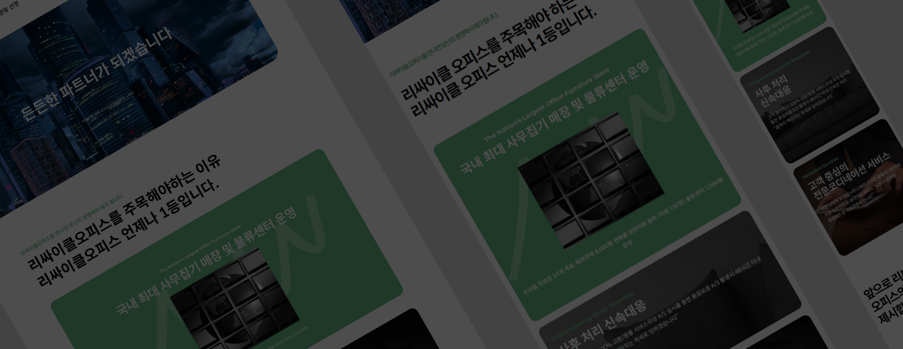

리싸이클오피스
- #flex, position 레이아웃
- #반응형 웹
- #개인 프로젝트

goals
- 리싸이클 오피스의 자연 친화적이고 다양한 장점들과 제품들을 돋보이되 과하지 않게
보일 수 있도록 리디자인
- 반응형 웹사이트로 어느 화면에서든 쉽게 접근할 수 있게!
design
리싸이클의 친환경 무드를 살려 그린, 화이트, 블루 계열의 컬러를
적용하였고 정결과 가독성을 살리기 위해 텍스트를 깔끔하게 배치
publishing
- 미디어 쿼리와 가변 단위 값을 이용한 사용자별 환경, 디바이스 제약 해결
- PC에서의 사용자 접근성을 높이기 위해 미디어 쿼리 PC 버전 추가 적용
- flex, position, Float 를 적용한 레이아웃 구성
- hover 값을 넣어 디자인 요소 추가 적용
- swiper 적용
- 햄버거 메뉴 구현
- transition을 적용하여 자연스럽게 나타남 적용
- fade in 효과 적용
- padding 값으로 이미지 사이즈 조정
Problems &
Resolutions
- 의도 했던 풀페이지 화면과 다르게 완성
-
arrow_right_alt
코드에 @media (min-width: 1600px)를 추가로 작성하여 작업.
수정이 필요한 부분에만 padding, width, height 값을 재지정해 줌.
- pc 기준에서 화면을 줄일 때 vision 부분 이미지가 자연스럽게 이동하지 않고
이미지가 작아짐
-
arrow_right_alt
position : absolute 값 기준을 right로 변경해 자연스럽게 이동하게 해 줌
width, height 값을 %에서 고정값인 px로 변경
- swiper 이벤트값 적용 전 일렬로 배치 시 아이템이 밑으로 내려감
-
arrow_right_alt
display:flex; 적용 후 아이템의 너비가 줄어들지 않도록 flex-shrink: 0; 적용
사이트 보러가기